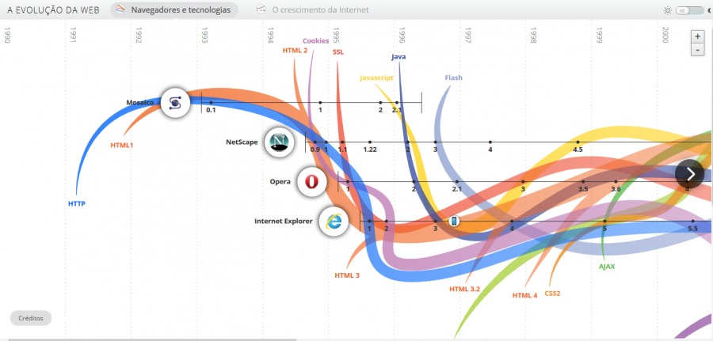

HTML (Hyper Text Markup Language) é uma Linguagem de Marcação de Hipertexto utilizada para criação de páginas da Web. Essa é a linguagem que o seu navegador (Browser) decodifica para exibir as páginas. (FERREIRA & EIS, ONLINE, p.7)
Desde a invenção da web em 1992 por Tim Berners-Lee, a HTML evoluiu a cada versão lançada, sendo a versão mais atual a HTML5. (SILVA, 2011, p.21)
O W3C (World Wide Web Consortium), criado em outubro de 1994 por Tim Berners-Lee, é um consórcio internacional formado por empresas, instituições, pesquisadores, desenvolvedores e público em geral. A finalidade desse consórcio é desenvolver a web a seu potencial máximo, criando normas, especificações e padronizações que se aplicam aos mais diversos segmentos e setores da web. (W3C, ONLINE)